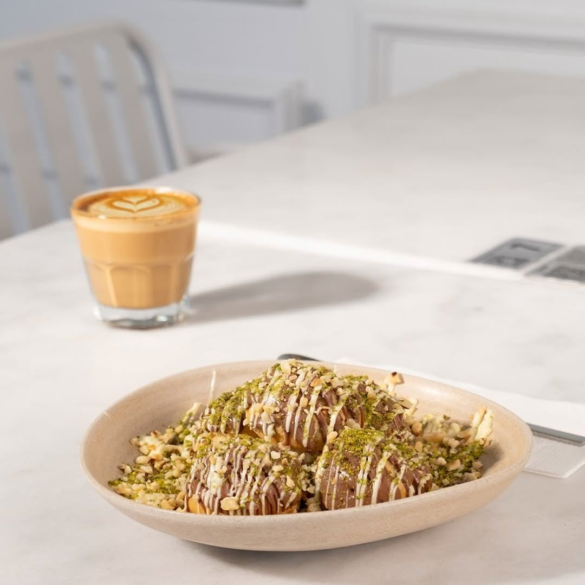
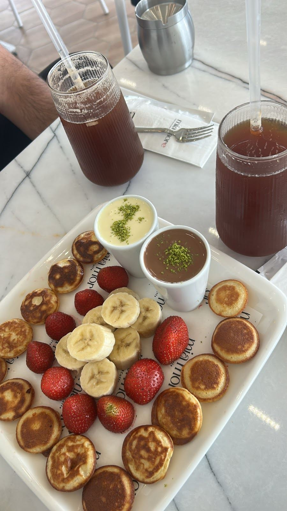
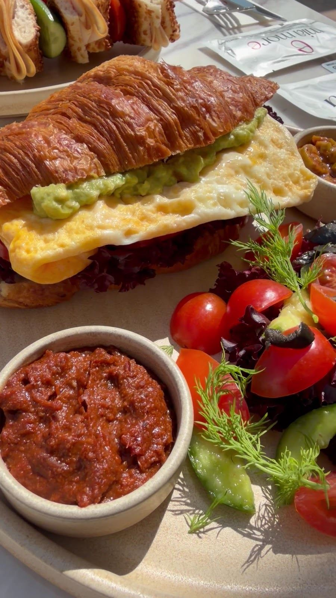
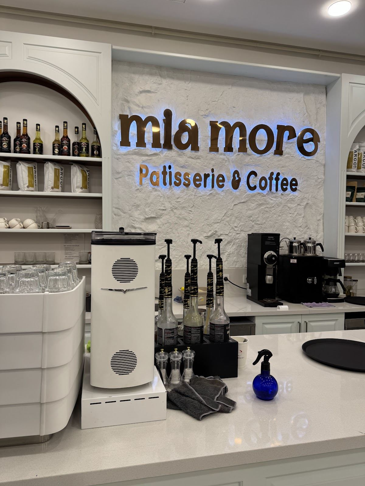

HALKALI · BİZİM MAHALLE
Kruvasanın çıtırtısı, kahvenin kokusu, çikolatanın tadı.Mia More’da kahveye uğrayın.


KRUVASAN · ÇİKOLATA · KAHVE
Meyveli tatlılardan kruvasan sandviçlere, kahvenizin yanına bir şey seçin.

Gurme More veya Fit More kruvasan sandviç.
Mia Cup, Frambuazlı Cup, Mini More ve Mia Waffle.
Americano, latte, cappuccino, flat white ve soğuk kahveler.
Platform menüsünü inceleyebilirsiniz. Mağaza fiyatları, güncel bulunabilirlik ve alerjen bilgisi için bize danışın.
MIA MORE’DA BİR MASA
Bizim Mahalle’de bir kahveye uğrayın. Beyaz ve altın detayların arasında kısa bir mola ya da uzun bir sohbet için.

GOOGLE YORUMLARI
395 Google değerlendirmesi
“Tatlıları çok güzel kesinlikle tavsiye ediyorum.”
Saliha Özyurt · Google yorumu
BEKLERİZ.
Hafta içi 07.00–00.00Hafta sonu 08.30–01.00
0532 569 85 13
Bu sayfa Anıl Akyıl tarafından hazırlanmış bir tasarım örneğidir; işletmenin resmî web sitesi değildir.
Bu demoda üyelik ve rezervasyon formu bulunmaz. Ziyaretçilerden ad, telefon veya mesaj bu sayfa üzerinden toplanmaz. Fotoğraflar ve yorumlar kamuya açık işletme kayıtlarından alınmıştır.
Sayfa GitHub Pages üzerinde barındırılır. GitHub, güvenlik amacıyla ziyaretçilerin IP adreslerini kaydeder. GitHub’ın açıklaması
Instagram veya Google bağlantıları ilgili hizmeti açar; bu hizmetlerin kendi gizlilik koşulları uygulanır. Görseller bu demo ile aynı adresten yüklenir. Harici yazı tipi hizmeti kullanılmaz.
İşletmenin resmî yayını için veri sorumlusu ve kullanılacak özelliklere göre ayrıca aydınlatma metni hazırlanmalıdır.
Bu demonun kodunda analiz veya reklam çerezi, takip pikseli ve kalıcı yerel depolama kullanılmaz. Menü ve galeri tercihleri kaydedilmez.
Instagram ve Google içerikleri gömülü olarak yüklenmez. İlgili hizmetler yalnızca bağlantılarına tıklarsanız açılır ve kendi çerez uygulamalarına sahip olabilir.
Barındırma sağlayıcısının güvenlik kayıtları çerezlerden ayrıdır. İleride analiz ya da üçüncü taraf entegrasyonu eklenirse bilgilendirme ve tercih mekanizması yeniden düzenlenmelidir.